CPU-Z
En esta prueba se comparan los resultados del benchmark de CPU-Z antes y después de corregir el problema que hacía que el procesador trabajara a la mitad de su potencial.
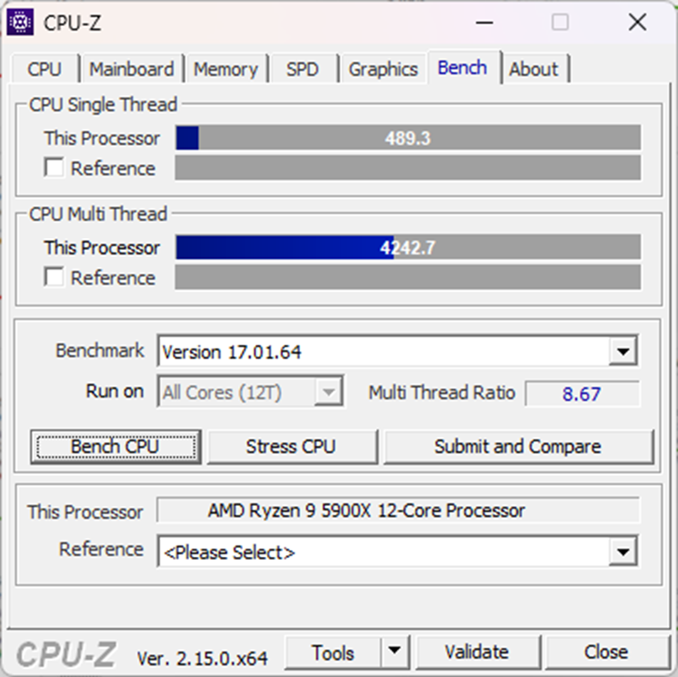
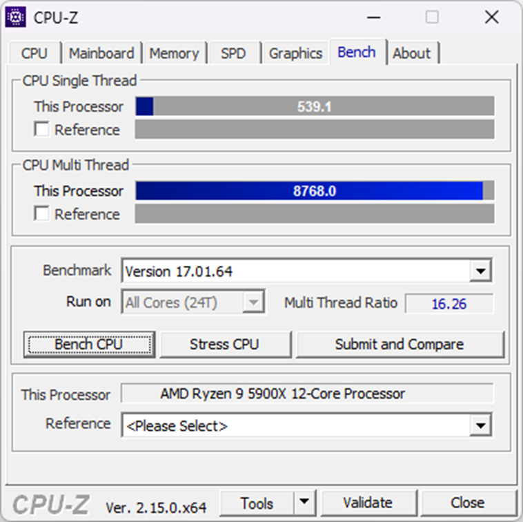
Cinebench
Cinebench permite medir el rendimiento del procesador tanto en tareas multihilo como en pruebas de un solo núcleo, lo que facilita observar la mejora conseguida tras resolver el problema de configuración.
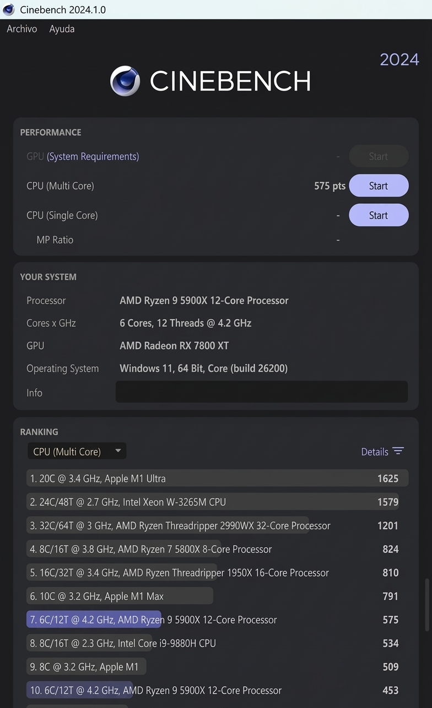
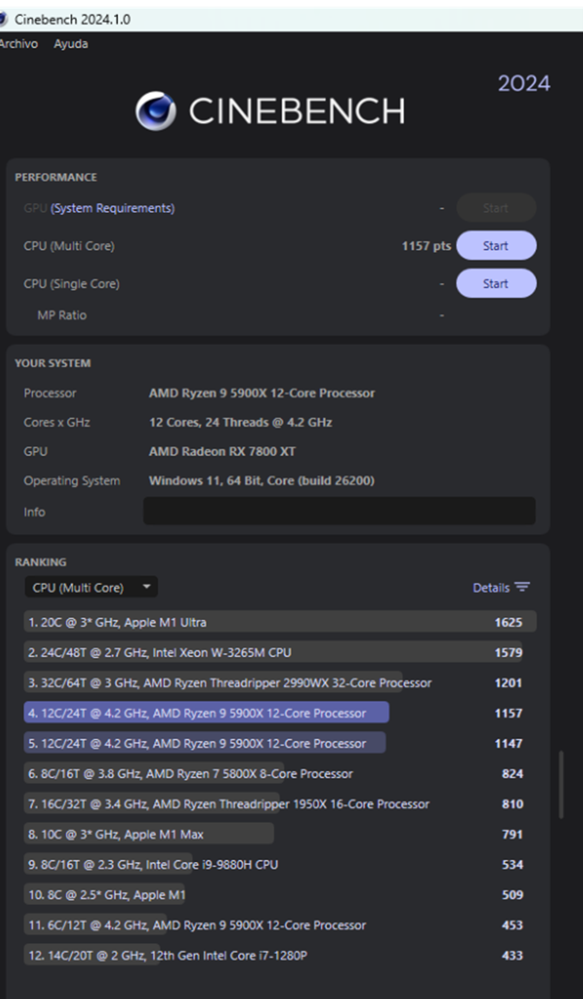
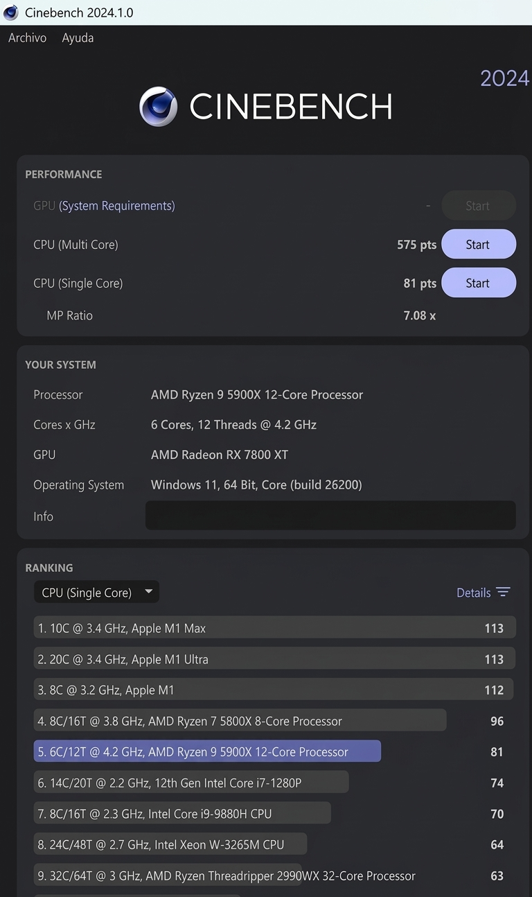
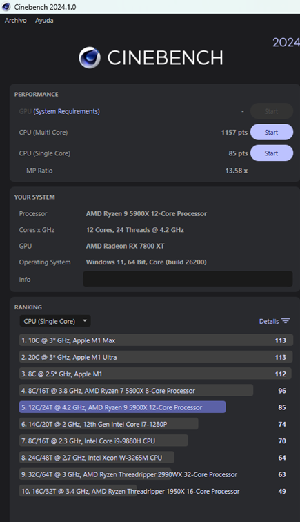
UserBenchmark

UserBenchmark ofrece una visión global del rendimiento del equipo, permitiendo valorar de forma conjunta procesador, gráfica, memoria y almacenamiento.
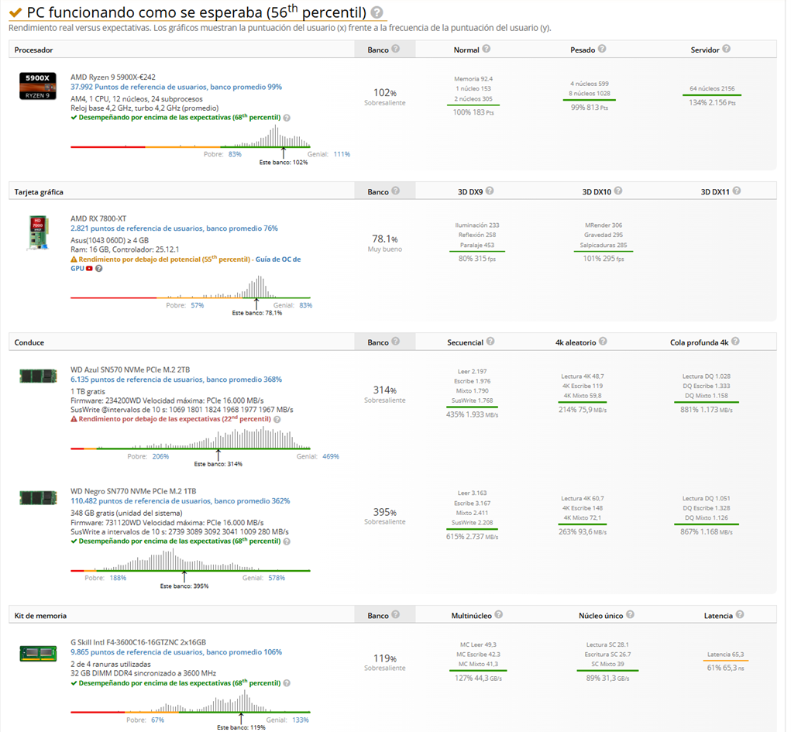
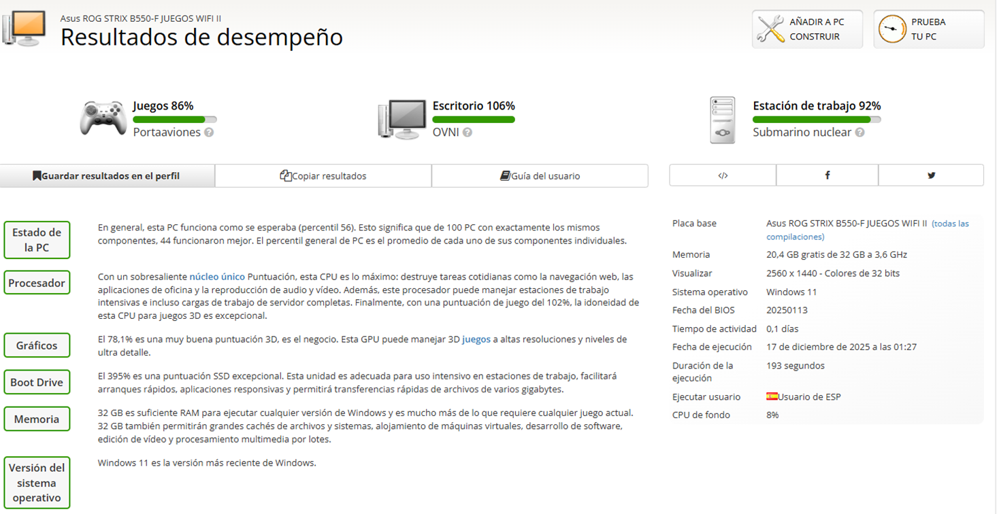
En estas dos capturas se muestran los resultados en Userbench, donde se puede comprobar las buenas prestaciones del ordenador y el rendimiento que ofrece.
CrystalDiskMark
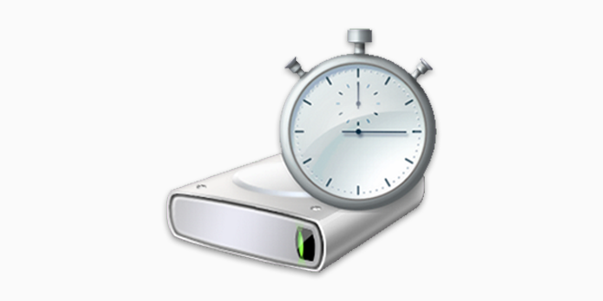
CrystalDiskMark permite medir las velocidades de lectura y escritura de las unidades de almacenamiento, tanto en condiciones de velocidad punta como en escenarios más cercanos al uso real.
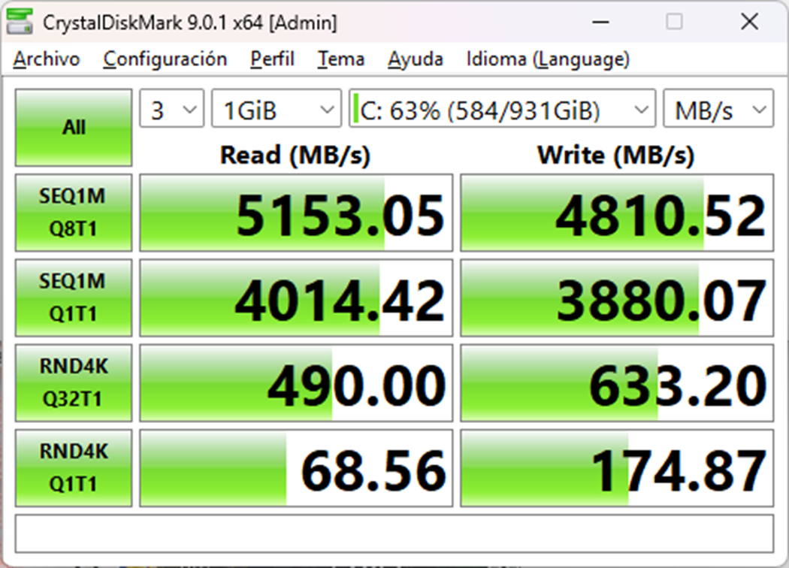
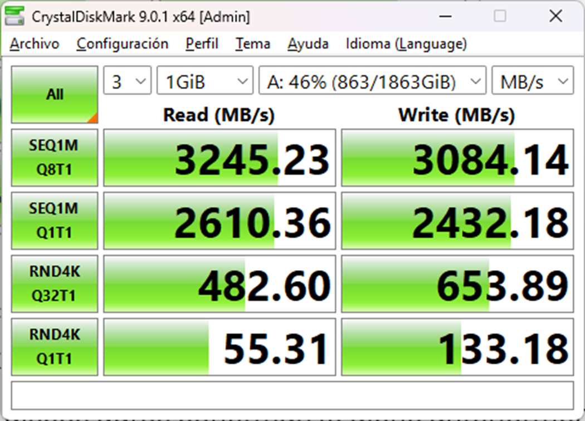
El benchmark realizado a los discos duros confirman lo ya mencionado anteriormente. C:, al estar en la ranura PCIe 4.0, tiene mejores velocidades que A:. Analizando un poco los datos, la primera columna analiza la velocidad punta, la segunda es el uso real diario mientras que las restantes se analizan velocidades dentro de archivos pequeños. En general, valores normales en M.2 de estas características.